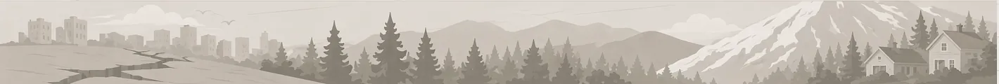
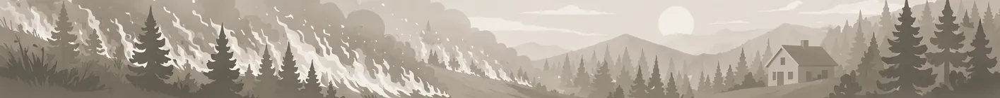
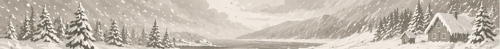
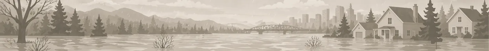

A hardware store, a pharmacy, a Saturday afternoon, and this list. Everything here is something you can find locally and assemble yourself.
Each kit below is organized by priority. Critical items are the ones that matter most — start there. Important items add depth and resilience. Recommended items are nice to have.
Every item includes why you need it and where to find it. Most of this is at your local hardware store and grocery store.
Two tiers for each threat: Essentials (the minimum, for 1–2 people) and Complete (scaled for a family or longer duration). Start with essentials. Add depth when you can.
Each kit has a print button that opens a clean, formatted checklist you can take to the store. Checkboxes included. We also have a printable family communication plan template — fill it out together and keep copies in every kit.
If this plan is useful, support Cascadia.me.
Buy once, use everywhere
These are the cross-cutting basics. Buy them once, decide where they live, and then duplicate only what truly needs to be in a car, go-bag, or second location.
Earthquakes, storms, and floods all mess with safe water fast. Wildfire evacuations are easier when water is already in the car.
Start with three days. More if you have kids, pets, or long drive times.
Delayed medical care is common across every scenario on this site. A real first aid kit and backup prescriptions are universal readiness.
Add personal meds before you buy another multitool.
Power loss is not a niche case here. Headlamps or flashlights belong in every hazard plan, not just winter storm prep.
Put one near each bed, not only in a storage tote.
Information changes outcomes. Emergency radio, county alerts, and evacuation warnings matter in quakes, smoke, floods, and winter outages.
Set alerts now. Do not rely on remembering later.
Recovery starts with IDs, insurance info, and small bills. Those matter whether you are evacuating, checking into a motel, or filing a claim.
Paper copies plus digital backups is the right combination.
Smoke, dust, broken glass, wet debris, and cleanup all punish bare hands and lungs. Protective basics carry across every hazard.
N95s, work gloves, and sturdy shoes do more than most novelty gear.

What to have ready when the ground moves. Sized for the reality that municipal water, power, and roads may be out for days — especially west of the Cascades.
Read the full earthquake guide for context.

When wildfire threatens, you may have minutes to leave. This kit lives by your door or in your vehicle — ready to grab.
Read the full wildfire guide for context.

Power outages. Downed trees. Roads that don't get plowed for days. This kit is for riding it out at home when the grid goes down and nobody's coming to fix it quickly.
Read the full winter storm guide for context.

River flooding gives you hours of warning, not minutes. This kit is about using that time well — protecting what you can, moving what matters, and being ready to leave.
Read the full flooding guide for context.
You don't have to do everything at once. Start with the critical items for whichever threat is most relevant to where you live. Add depth over time. The point isn't perfection — it's being meaningfully more ready than you were yesterday.
Back to the guidesThis checklist is written by Michael Hendrick and cross-checked against official emergency kit guidance, household planning guidance, and the regional hazard pages on Cascadia.me.
For the June 26, 2026 review, the practical reset is water rotation, daily medications, first-aid refills, pet supplies, charged power banks, N95 or better masks, and clean HVAC or portable air filters before heavy smoke days.
It is intentionally independent: no affiliate links, no product rankings, and no pressure to buy gear you do not need before covering water, medications, light, heat, and communication.
Support this site
No ads. No affiliate links. If this made your planning clearer, you can support the project.